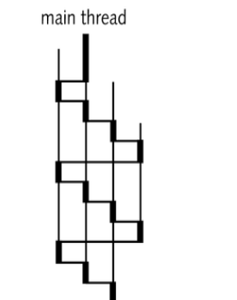
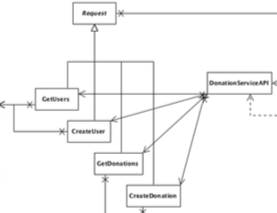
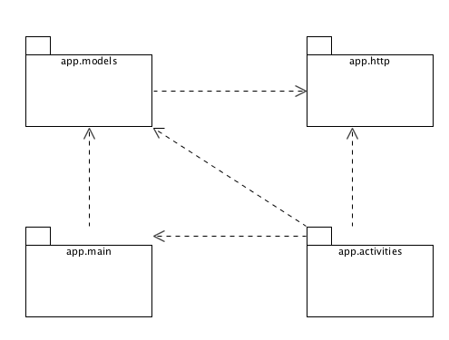
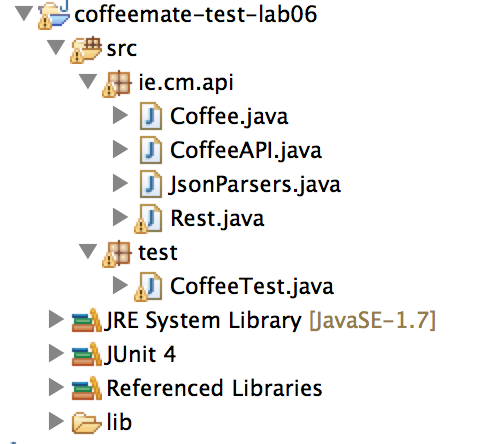

Donation Service Test
10: REST & AsyncTasks


A standard Java project to implement a JUnit set of tests of the donation Service API. This is essential to ensure the stability and robustness of the REST interface.
Processes & Threads

An introduction to the Java threading model. Threads are necessary for applications that wish to access network services in Android.
Donation Android V4

This version of the Donation Android application will access the REST interface to validate a user, and download the list of donations to display in the reports view.
Donation Android Models

The android donation application is now quite sophisticated. Here we review the models for both v3 and v4 of the app.
Donation-07

Reintroduce the Donation Android app, refactor it to interact with the donation-play-service
Donation-08

Rework the Donation-android activities to support signup and donate activities using the REST service.